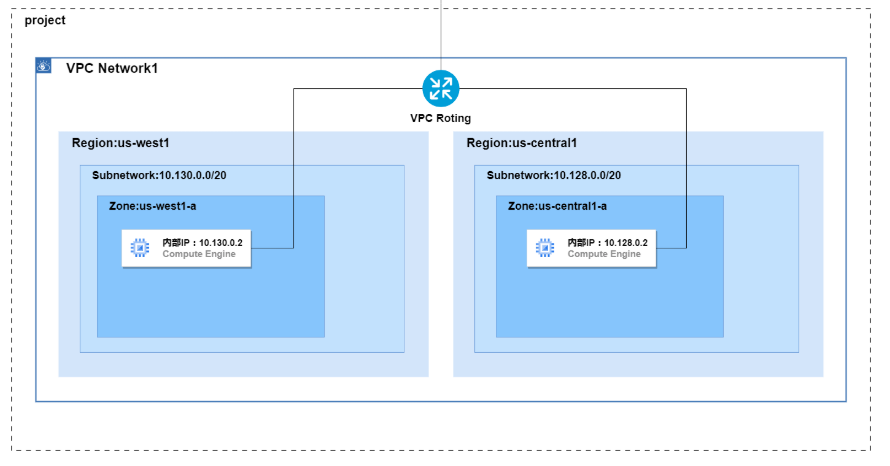
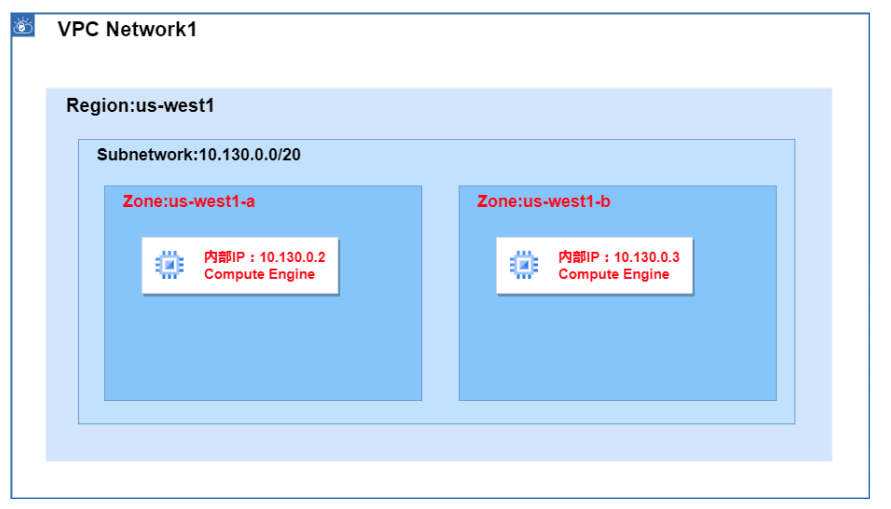

4. Network¶
4.1. VPC¶
VCPとは、Google Cloud内に提供される仮想ネットワーク提供サービス。
4.1.1. VCPネットワーク¶
Google Cloud内に構成される仮想ネットワークをVPCネットワークと呼ぶ。 VPCネットワークはグローバルリソースであり複数のリージョンを収容可能。

【よくわかる Google Cloud】VPCネットワークとはまた、リージョン内のサブネットに作成されたVNなどには内部IPが割り当てられ、VPC内の通信に関しては異なるサブネットに所属していても内部IPを利用して通信が行われるため、特別なルーティング設定なしに可能である。 すなわち、GCPにおいては、VPCを構築するだけでマルチリージョン構成を構築できる。
4.1.2. サブネット¶
サブネットとは、ネットワークのIPアドレスを論理的に分解した小さなネットワークである。 サブネットは、CIDR表記を利用されて表現される。 VPC内部においてサブネットを定義する際にはVPC内でCIDRが重複しないよう設定を行う必要がある。
サブネットはリージョンリソースであり、複数のZoneに跨いで定義することができる。

【よくわかる Google Cloud】VPCネットワークとは4.1.3. ルーティング¶
ルーティング（経路制御）では、VPC内のトラフィックをどこに転送するかのルールを定義する。
VPCネットワークごとにルートテーブルが存在し、宛先CIDRごとに送り先を定義する。
VPCネットワークを作成したタイミングでデフォルトとしてデフォルトルートとサブネットルートが自動で登録される。
種類 |
内容 |
|---|---|
サブネット間ルート |
VPC作成時に、自動生成。すべてのサブネット間通信を許可するルート（削除不可） |
デフォルトルート |
VPC作成時に、自動生成。。IGW（default-internet-gateway）に向く |
カスタムルート |
特定のCIDRをVPN、Peering、VMインスタンスなどに向けるための追加ルート |
例としては以下のような設定を行う。
宛先 |
次ホップ |
備考 |
|---|---|---|
10.128.0.0/9 |
local |
自動生成（同じVPC内の他サブネット） |
0.0.0.0/0 |
default-internet-gateway |
インターネット向け（デフォルト） |
10.0.0.0/16 |
vpn-tunnel-1 |
オンプレミスVPN |
192.168.0.0/24 |
instance-1 |
ルータ代わりのVMなど |
4.1.3.1. ルーティングの種類¶
VPCで設定されるルートについて、以下のポイントを押さえる
まず、ルートの供給元（Control Plane）
種類 |
生成元 |
自動/手動 |
概要 |
主な用途 |
設計思想 |
|---|---|---|---|---|---|
システム生成ルート |
GCP（VPC） |
自動 |
サブネット作成時に自動生成されるルート |
VPC内部通信 |
「何も考えなくても繋がる」 |
静的ルート（カスタム） |
ユーザー |
手動 |
宛先CIDRとネクストホップを明示的に定義 |
固定経路・アプライアンス経由 |
「明示的に経路を決める」 |
動的ルート（BGP学習） |
Cloud Router |
自動 |
オンプレミスや他ネットワークからBGPで学習 |
VPN / Interconnect |
「外部の変化に追従する」 |
（補足）カスタム学習ルート |
Cloud Router |
手動 |
BGPで学習したことにするルートを追加 |
BGP非対応環境の補完 |
「学習ルートを擬似的に補う」 |
次に、ルートの適用方法（Data Plane）
種類 |
判定基準 |
優先度 |
柔軟性 |
主な用途 |
設計思想 |
|---|---|---|---|---|---|
ポリシーベースルート（PBR） |
送信元IP + 宛先IP など |
最優先 |
非常に高 |
トラフィック分岐・セキュリティ制御 |
「意図に基づくルーティング」 |
通常ルート（最長一致） |
宛先IP（CIDR最長一致） |
PBRの次 |
中 |
一般的なルーティング |
「シンプルで予測可能」 |
評価フロー
PBR が最初に評価される
マッチしなければ通常ルート（最長一致）
4.1.3.2. 静的ルートにおけるルーティング先¶
カスタム静的ルートでは、next hop に指定できるのは：
VMインスタンス
インスタンスのNIC
VPNトンネル
Cloud NAT（ではない）
インターネットゲートウェイ
Internal Load
「ただのIPアドレス」は指定できない。
これは、GCPは「リソースベースルーティング」であり、IP単体ではなく「管理対象のリソース」に送るという思想のため。
4.1.4. IGW¶
デフォルトインターネットゲートウェイは、GCP環境内に自動で作成される、インターネット接続ポイントであり、VPCネットワーク作成時に自動で有効化されており、削除もできない。
ルートの設定は、VPC全体に適用されるため、サブネット単位でインターネット接続の可能不可能を制御しない。つまり、GCPにおいては、Public SubnetやPrivate Subnetといった考えは存在しない。GCPにおいて、外部への接続の制御は、Firewallで行う。
また、外部IPを持っている場合は外部IPを利用してIGWを経由してアクセスを行うが、外部IPを持たせたくない場合はNATを経由してアクセスする。
4.1.5. Cloud NAT¶
Google Cloud でインスタンス（例：Compute Engine）からインターネットに接続するには、通常は外部IPアドレスを付与する必要がある。
ただし、外部からの通信は受け付けたくない、つまりインバウンド通信を遮断したい場合には、外部IPを付与せずにアウトバウンド通信だけを有効にしたくなる。
このようなケースで利用するのが Cloud NAT（Network Address Translation） である。
Cloud NAT を構成するためには、Cloud Router がセットで必要となる。Cloud Router は、Cloud NAT のルーティングを制御する役割を担う動的ルーティング機能であり、NATゲートウェイのバックエンド的存在。
Cloud NAT は、対象となるサブネットまたはサブネット内のIPレンジ（例：特定のVMのプライベートIP範囲）を指定することで、そのサブネットからのアウトバウンド通信を自動で変換してくれる。つまり、VM やアプリケーション側では NAT の存在を意識する必要はない。
Cloud NAT
└─ Cloud Router
└─ VPC
└─ (対象サブネットを指定)
4.1.5.1. プライベートNAT¶
プライベートネットワーク同士（オンプレ・他VPC）用の NATをプライベートNATと呼ぶ。
接続元と接続先でIPが重複している場合やルートが多い場合などにプライベートNATを利用してIP変換を行う。
プライベートNATには、HybridNATとNCC用がある
Private NAT（大分類）
├─ Hybrid NAT（オンプレ / 他クラウド向け）
└─ Private NAT for NCC spokes（VPC同士向け）
4.1.6. Firewall¶
Firewallとは、ターゲットへの通信において、ポリシーを定義することで許可または拒否するセキュリティ機能。
GCPにおいては、単一のFirewallだけで制御するのではなく、複数のレイヤ（階層）でFirewallが適用される設計になっている。
主に以下の3つのレイヤで構成される：
階層型ファイアウォールポリシー（組織・フォルダレベル）
グローバル ネットワーク ファイアウォール ポリシー（Cloud NGFW）
VPC ファイアウォール ルール（VPC単位）
これらは独立して存在するのではなく、評価順序に従って順番に適用される。 階層構造と評価順についてデフォルトだとズレがある点に注意。（以下がデフォルト）
[階層型 Firewall] ← 組織ガバナンス
↓
[VPC Firewall] ← 基本的な通信制御
↓
[NGFW (Global Network Firewall Policy)] ← 高度セキュリティ（IPSなど）
このため、上位レイヤで通信が拒否された場合、下位レイヤには到達しない点に注意が必要。
ただし、network firewall policy enforcement orderによって、順番を一部変更することが可能
AFTER_CLASSIC_FIREWALL（デフォルト）→先にVPCが評価される
Hierarchical
VPC firewall rulesGlobal network firewall policies
Regional network firewall policies
BEFORE_CLASSIC_FIREWALL
Hierarchical
Global network firewall policies
Regional network firewall policies
VPC firewall rules
GCPにおいては、VPCに対してFirewallを定義することができ、インバウンドやアウトバンドの通信についてポリシーを適用することができる。具体的には、以下のようにルールを適用できる。
要素 |
説明 |
|---|---|
direction |
INGRESS（受信） or EGRESS（送信） |
action |
ALLOW または DENY |
sourceRanges / destinationRanges |
INGRESSでは送信元、EGRESSでは宛先をCIDRで指定 |
protocols / ports |
TCP/UDPなどとポート番号の組み合わせ |
targetTags / targetServiceAccounts |
このルールを"どのVMに"適用するか（タグ or SA） |
INGRESSとEGRESSでそれぞれの要素の具体的な意味合いが異なるのでそれぞれについてまとめると以下。
要素 |
INGRESS時の意味 |
EGRESS時の意味 |
|---|---|---|
action |
ALLOW or DENY（受信の許可/拒否） |
ALLOW or DENY（送信の許可/拒否） |
sourceRanges |
通信の送信元IP（例：0.0.0.0/0） |
使用しない（EGRESSでは指定不可） |
destinationRanges |
使用しない（INGRESSでは指定不可） |
通信の宛先IP（例：8.8.8.8/32） |
protocols / ports |
どのポートを許可するか（例：tcp:22） |
どのポートを許可するか（例：tcp:443） |
targetTags / targetServiceAccounts |
通信を受けるVMの指定 |
通信を出すVMの指定 |
priority |
優先度。数値が小さいほど優先 |
優先度。数値が小さいほど優先 |
4.1.6.1. 階層型ファイアウォールポリシー（Hierarchical Firewall Policy）¶
組織（Organization）またはフォルダ単位で適用されるFirewallポリシー。
すべてのプロジェクト・VPCに対して横断的に適用されるため、ガバナンスや統制目的で使用される。
主な特徴：
組織 / フォルダにバインドされる
配下のすべてのVPCに強制適用される
セキュリティのベースラインを統一できる
ユースケース：
外部からのSSH（22番ポート）を全社的に禁止
特定のIPレンジからのアクセスを全体で拒否
設計上のポイント：
最上位レイヤで評価されるため影響範囲が非常に大きい
誤設定すると全環境に影響する
4.1.6.2. グローバル ネットワーク ファイアウォール ポリシー（Cloud NGFW）¶
Cloud NGFW（Next-Generation Firewall）の機能を提供するファイアウォールポリシー。
従来のIP/ポートベースの制御に加え、L7レベルの検査や脅威検知（IPS）を行うことができる。
主な特徴：
複数のVPCにまたがって適用可能
セキュリティプロファイルを用いた高度な検査
通信内容に基づいた制御が可能
主な機能：
IPS（侵入防止）
IDS（侵入検知）
URL / FQDNベースの制御
脅威インテリジェンス
ユースケース：
マルウェア通信の遮断
不正なアプリケーショントラフィックの検知
外部サイトへのアクセス制御（Egress制御）
設計上のポイント：
VPC Firewallより前に評価される場合がある（設定による）
ここでブロックされるとVPC Firewallのログは出ない
4.1.6.3. VPC ファイアウォール ルール¶
VPC単位で定義される、最も基本的なファイアウォール。
L3/L4（IP・ポート）ベースのシンプルな制御を行う。
主な特徴：
VPCごとに個別に設定
インスタンス単位（タグ / サービスアカウント）で適用可能
シンプルで柔軟
ユースケース：
アプリケーション間通信の制御
サブネット間通信の許可
内部通信（RFC1918）の許可
設計上のポイント：
最下位レイヤのため、上位でブロックされると評価されない
ログはここでマッチした場合のみ出力される
4.2. ネットワークの拡張¶
VCPを拡張し、他のVPCやオンプレミスと通信する方法には以下のようなものがある。
方式 |
何をつなぐ？ |
別VPC同士を接続？ |
別PJでも使える？ |
別組織でも使える？ |
オンプレ接続？ |
主な用途 |
重要な制約・特徴 |
|---|---|---|---|---|---|---|---|
VPCピアリング |
GCP内のVPC ↔ VPC |
〇 |
〇 |
〇 |
✕ |
GCP内ネットワーク統合 |
CIDR重複不可（利用しなくても重複時点でNG） |
共有VPC |
ホストPJを経由してVPCを共有 |
〇 |
〇（同一組織のみ） |
✕ |
✕ |
ネットワーク統制の中央集約 |
同一組織限定・IAM設計重要 |
Cloud VPN |
VPC ↔ 外部ネットワーク |
〇 |
〇 |
〇 |
〇 |
小〜中規模ハイブリッド |
IPsec・HA VPNで99.99% SLA。Cloud VPN GWはリージョナルリソース |
Cloud Interconnect |
VPC ↔ 外部ネットワーク（専用線） |
✕ |
✕ |
✕ |
〇 |
大規模・高帯域接続 |
Cloud Router必須・10〜100Gbps |
Cloud Interconnectについては、さらに専用線のDedicatedとパートナー事業者を通じたParterがある。
種類 |
概要 |
接続場所 |
導入難易度 |
備考 |
|---|---|---|---|---|
Dedicated |
Googleと直接物理接続する専用線 |
GoogleのPOP（相互接続拠点） |
高 |
専用ポートと帯域（10Gbps単位）を選択可能だが、専用IF必要 |
Partner |
Googleのパートナー（通信事業者など）を通じて接続 |
任意の場所（パートナーが提供） |
中 |
柔軟な帯域・地域対応。事前の契約が必要 |
4.2.1. VPCピアリング¶
異なる VPC 同士を 対等に直接接続する方式で、CIDR の重複が許されない点に注意が必要。 VPCピアリングは、VPC間が同一組織内出なくても問題ない。
4.2.1.1. VPCピアリングで共有されるルート¶
VPCピアリングをすると、ピアリングされたVPC同士のサブネットのルートについて共有される。 一方で、
カスタムルート
オンプレルート
については、共有されないため、exportやimportの設定が必要な点に注意
また、IGWはVPCに紐づいているため、0.0.0.0からIGWへの静的ルートは、Export / Importしても他のVPCには共有されない（伝播しない）
4.2.1.2. VPCピアリングの遷移性¶
VPC Peering の最も重要な制約は 非遷移（non-transitive）であること。
VPC-A --- Peering --- VPC-B --- Peering --- VPC-C
この構成では
A → B は通信可能
B → C は通信可能
A → C は通信できない
A → B → C
のように 経由通信（トランジット）はできない。
4.2.2. Hub-Spoke¶
複数のVPCを集約する時に1つのHubと複数のSpokeで構成する。 Hub側で通信検閲のアプライアンスを持ったり、オンプレとのInterConnect接続を持たせる構成などが良くある。
4.2.4. Cloud VPN¶
Cloud VPNは、IPsecベースのVPN接続で、以下の登場人物を利用する。
Google Cloud側：Cloud VPN ゲートウェイ
オンプレミス側：オンプレミス VPN ゲートウェイ
それを繋ぐ：VPNトンネル
VPNを高可用性にする場合は、HA Cloud VPNを利用する。 Googleが内部で冗長化したVPNゲートウェイに対して、2本のトンネルを張る。
[ On-Prem VPN ]
|| ||
|| || ← トンネル2本（別ゾーン終端）
|| ||
[ HA Cloud VPN ]
(IF-1)(IF-2)
4.2.4.1. VPNのルート設計¶
VPNでのルーティングは、原則として HA VPN + Cloud Router（BGP）による動的ルーティング が推奨される。 ただし、オンプレミス機器がBGPに対応していない場合は、Classic VPNによる静的ルーティングを使用する。
観点 |
ルートベースVPN |
ポリシーベースVPN |
|---|---|---|
制御主体 |
ルート |
traffic selector |
トンネルの性質 |
広い（全部通す） |
狭い（限定） |
CIDR増減 |
柔軟（ルート追加だけ） |
面倒（トンネル or selector変更） |
設計思想 |
ネットワーク中心 |
セキュリティルール中心 |
典型的な用途 |
HA VPN / 大規模 |
レガシー機器対応 |
4.2.5. Direct Peering（VPC拡張ではない接続方式）¶
Direct Peering は VPC を拡張する仕組みではなく、
オンプレミスネットワークと Googleの公開ネットワークを直接接続する方式である。
オンプレネットワーク
│
│ (物理接続 / IX)
│
Google Edge (PoP)
項目 |
内容 |
|---|---|
接続対象 |
Googleの公開サービス（Cloud Storage、BigQuery、Google APIsなど） |
IPアドレス |
パブリックIPのみ |
接続方式 |
BGPによるルーティング情報交換(インターネットを経由ではない) |
VPC接続 |
不可（プライベートIPは到達不可） |
用途 |
大量データをGoogle公開サービスへ高速転送 |
SLA |
なし |
Direct Peeringの位置づけとしては以下がポイント
インターネットを経由せず、Googleのエッジネットワークと直結
VPC内部リソース（VM、内部LB）には接続できない
Cloud Interconnect と異なり、VPCへのプライベート接続ではない
4.2.5.1. Carrier Peering¶
Direct Peeringは直接GoogleEdgeに対して通信するが、Carrier PeeringはISP（Internet Service Provider）を経由して通信する。 InterconnectのDedicatedとPartnerに該当する。
オンプレ
│
ISP / 通信キャリア
│
Google Edge
Direct PeeringとCarrier Peeringの比較
項目 |
Direct Peering |
Carrier Peering |
|---|---|---|
接続 |
企業 → Google |
企業 → ISP → Google |
接続場所 |
PoP / IX |
ISP |
設備 |
必要 |
不要 |
用途 |
Google APIs |
Google APIs |
4.3. ネットワーク内の安全性（VPCSC：VPC Service Contorls）¶
VPC Service Controls は、BigQuery や Cloud Storage などの
Google Cloud マネージドサービスを「論理的な境界（Service Perimeter）」で囲い、
境界外へのデータ流出を防ぐためのセキュリティ機構である。
IAM による「誰が（Who）」「何を（What）」という認証・認可に加え、
「どこから（Where）」そのリクエストが来たのかを評価対象に含める点が特徴。
なぜ VPC Service Controls が必要なのかというとIAM だけでは、次のようなリスクを防げない。
正しいユーザー・サービスアカウントが誤って、または悪意を持って社外・インターネット経由からデータにアクセスする
IAM は 認証・認可（Who / What） は制御できるが、
通信経路（Where） までは制御できない。
そこで VPC Service Controls を使う。
4.3.1. VPC SCの境界¶
VPC Service Controls（VPC SC）の「境界」とは、 Google マネージドサービスの API に対して適用される 論理的なデータ境界（Service Perimeter）である。
この境界は、ネットワークの物理的な線や VPC の境界ではなく、 API 呼び出し時に評価されるルールの集合として定義される。
VPC SC は、API 呼び出しごとに以下の観点で 「このリクエストが境界内か」を評価する。
対象サービスが Service Perimeter に含まれているか
（例：BigQuery、Cloud Storage など）呼び出し元のプロジェクトが境界内に属しているか
（Service Perimeter はプロジェクト単位で定義される）アクセス元が境界内と認められた経路か
境界内プロジェクトの VPC
Private Google Access 経由
許可されたオンプレミス（VPN / Interconnect）
IAM の認証・認可を満たしているか
（VPC SC は IAM を置き換えない）
4.4. GCPの通信整理（内→内・外→内・内→外）¶
4.4.1. 内→内：VPC 内通信（VM / GKE）¶
通常の RFC1918 アドレス通信
firewall / routing がそのまま適用される
4.4.2. 外→内：VPC外のサーバレスサービス → VPC内¶
4.4.2.1. Serverless実行環境と VPCの接続¶
Cloud Run や Cloud Functions は、VPC の外で実行されるサーバレス環境である。 そのため、VPC 内のリソース（Private IP）にはデフォルトでは到達できない。
サーバレス環境から VPC 内へ通信するための出口（egress）を提供する仕組みとして、Serverless VPC Access コネクタが利用される。
Cloud Run
↓
(Serverless VPC Access)
↓
PSC Endpoint（自分のVPC内IP）
↓
Google内部バックボーン
↓
Cloud SQL
4.4.3. 内→外：VPC内 → VPC外のGCS API¶
VPC 内部（外部 IP を持たない VM や GKE ノード）から、Google のマネージドサービスにアクセスする場合の考え方を整理する。
4.4.3.1. Private Google Access¶
Private Google Access（PGA）は、外部 IP を持たない VM や GKE ノードから、Google APIs にアクセスできるようにする仕組みである。 PGA は、一般的なインターネット通信ではなく、「Google APIs 向けの特例ルート」として位置づけられる。
PGAは、サブネット単位で有効化され、そのサブネット内の「外部IPを持たないVM」が、パブリックインターネットを経由せずに Google API や Google マネージドサービスへアクセスできるようにする仕組み。
4.4.3.2. PGAの必要性¶
通常、Cloud Storage API や BigQuery API などの Google APIs は、ネットワーク上では インターネット上のパブリック IP 宛の通信として見える。
そのため、外部 IP を持たない VM、Cloud NAT を構成していない環境からは、Google APIs に到達できない。 そこで、PGAを利用することで、外部IPを持たずに、GCPのサービスにアクセスをすることができる。
4.4.3.3. PGAの仕組み¶
Private Google Access を有効にすると、Google APIs 宛の通信だけを対象に、インターネット通信として扱わずGoogle の内部バックボーン経由でルーティングするという 例外的な経路が VPC に追加される。
これにより、外部 IP や Cloud NAT を持たない VPC 内リソースからでも、Google APIs へ安全にアクセスできるようになる。
ルーティングの設定としてはGCPのデフォルトのインターネットゲートウェイをネクストホップとするルートを指定しておけば、自動でGCPがPGAへルーティングする。
4.4.3.4. レンジ帯¶
PGA向けの特別なアドレス帯として、以下のIP帯が定義されている。 restricted.googleapi.comについてはPrivate Service Connect fot Google APIsで利用される
API |
IPレンジ |
|---|---|
restricted.googleapis.com |
199.136.153.4/30 |
private.googleapis.com |
199.136.153.8/30 |
4.4.3.5. オンプレ向けのPGA¶
Cloud Interconnect や Cloud VPN 経由でオンプレから Google API にアクセスするには、オンプレ向けPGAを使用する。
VM用（サブネット内）とオンプレで差がある理由は以下
理由 |
通常PGA |
オンプレ向けPGA |
なぜ重要か |
|---|---|---|---|
管理境界 |
Cloud内のみ |
Cloudとオンプレを跨ぐ |
責任範囲と設計思想が異なる |
経路制御 |
サブネット設定のみ |
Cloud RouterでVIP広告が必要 |
BGPルーティングが絡む |
SLA影響 |
なし |
Interconnect SLA対象 |
経路誤設定でインターネット経由になる可能性 |
設定難易度 |
単純 |
ルート設計が必要 |
Network Engineer領域になる |
上記を踏まえて通常のPGAとオンプレPGAの差が以下
項目 |
通常のPGA |
オンプレ向けPGA |
|---|---|---|
対象 |
VPC内のVM |
オンプレホスト |
制御単位 |
サブネット単位で有効化 |
Cloud Routerで経路広告 |
ルーティング先 |
private.googleapis.com または restricted.googleapis.com |
private.googleapis.com または restricted.googleapis.com |
通信経路 |
VM → VPC → Google内部ネットワーク → API |
オンプレ → Interconnect/VPN → VPC → Google内部ネットワーク → API |
経路広告 |
不要 |
必要（VIPレンジをオンプレへ広告） |
SLA考慮 |
特に意識しない |
Interconnect SLAの影響を受ける |
4.5. VPC外部のサービスを内部として扱う¶
GCP では「VPC の外に存在するものを、VPC 内リソースのように扱いたい」 という要件に対して、役割の異なる 2 つの仕組みが用意されている。
Private Service Access（PSA）
Private Service Connect（PSC）
この 2 つは名前が似ているが、越える境界と役割が明確に異なる。 混同しないためには「何を VPC に引き込みたいのか」「どの境界を越えるのか」を先に考える必要がある。
4.5.1. Private Service Access（PSA）¶
Private Service Access は、Cloud SQL などの Google 管理サービスを、
自分の VPC に Private IP で引き込むための仕組みである。
PSA の本質は、
Google 管理サービスをVPC内として扱い、PrivateIPで通信する
点にある。
例えば、Cloud SQL（Private IP）は、ユーザーの VPC の中に直接存在しているわけではなく、 Google が管理するサービスとして別の管理ネットワーク上に存在している（サービスプロデューサー側のVPCに存在している）。 そのため、そのままでは VPC 内リソースとして扱えない。
このギャップを埋めるのが Private Service Access であり、 「Google 管理サービス専用の VPC 接続」と考えると理解しやすい。
代表的な対象は以下。
Cloud SQL（Private IP）
Memorystore
内部の仕組みとしては、
VPC内に 「予約されたIPレンジ（allocated range）」 を作る
そのレンジを Google管理サービス側（別ネットワーク）に委譲する
自分のVPCとGoogle管理のVPC(Service Producer Network)に対してVPC Peeringを設定している
通信イメージは以下のようになる。
自分の VPC
↓
Private Service Access
↓
Cloud SQL（Google 管理・Private IP）
PSA には重要な制約がある。
接続対象は Google 管理サービスに限定される
PSA は Google 管理サービス専用の接続であり、別 VPC / 別プロジェクトの一般リソースには利用できない。
別プロジェクトや別 VPC のリソースには到達できない
Service Netowriking APIを有効化する必要がある
つまり、Cloud SQL を Private IP で利用する場合、PSA は前提条件だが、PSA だけでクロスプロジェクト接続はできない。
4.5.1.1. Service Networking API¶
上記の制約に登場したService Networking APIとは。
自分の VPC（サービスコンシューマー）と
Google 管理 VPC（サービスプロデューサー）を
VPC Peering で接続するための制御プレーンAPI
4.5.1.2. PSAのサブネット¶
PSAはVPCピアリングをベースとした仕組みであり、L3レベルでネットワーク同士が接続される。 そのため、Cloud SQLも「IPを持つリソース」として扱われる。
このとき、通信を成立させるためには、Google側のサービスが使用するIPアドレス空間が必要になる。 具体的には、VPCから専用のIPアドレス範囲（通常/24以上）割り当てる必要がある。
注意点としては、このIPレンジはユーザのVPC内でサブネットとして使われるわけではない点である。 実際には：
ユーザがIPレンジを予約する
Google側がそのレンジを使用する
という構造になっている。
つまり、「自分のVPCのためのサブネット」ではなく、「Googleサービスのために貸し出すIP空間」という位置付けになる。
4.5.2. Private Service Connect（PSC）¶
Private Service Connect は、別 VPC や別プロジェクト、外部サービスを、
自分の VPC に Private IP として出現させる仕組みである。
PSC の本質は、
外部にあるサービスをVPC 内の Private IP 宛通信として扱える
点にある。
PSC の設計思想は以下。
通信は常に Google の内部バックボーン
インターネットや NAT を通らない
VPC ピアリング不要
Producer / Consumer モデル
PSC を使うことで、 「どの VPC が、どのサービスに、どの IP で接続できるか」 をネットワーク構造として明示的に制御できる。
4.5.2.1. PSCの種類¶
PCSには以下3つの種類がある。
PSC to producer service SaaS / 他VPC
PSC published service 自分のサービス公開
PSC for Google APIs Google API
PSC for Google APIsはPGAと似た機能だが、特定のAPIのみをプライベートIPで通信したい時に利用できる。
4.5.2.2. PSC の基本構造（仕組み目線）¶
Producer 側
Cloud SQL、内部サービス、SaaS などをPSC 経由で公開可能なサービスとして定義
この時点では Consumer 側の IP は存在しない
Consumer 側
自身の VPC に PSC エンドポイントを作成
VPC 内に Private IP（RFC1918）が払い出される
この IP 宛の通信が Google バックボーン経由で Producer に転送される
通信の性質
送信元・宛先ともに Private IP
firewall / routing 的にも VPC 内通信として扱える
4.6. クロスプロジェクトの通信¶
別プロジェクトに存在する Cloud SQL（Private IP）をCloud Run から利用するケースを考える。
4.6.1. パターン①：PSCを利用¶
Cloud SQL 側で Private Service Connect を有効化し、Cloud Run 側のVPCに PSC Endpoint（内部IP） を作ってそこへ接続する。
Cloud Run
↓（Direct VPC egress または Serverless VPC Access）
Consumer VPC（Cloud Run 側）
↓
PSC Endpoint（内部IP / forwarding rule）
↓
Service Attachment（Cloud SQL 側が提供）
↓
Cloud SQL（別PJ）
4.6.3. パターンC：PSAとVPCピアリングを利用¶
Cloud SQL がいるVPC（PSAでPrivate IP運用しているVPC）と、Cloud Run 側VPCを VPC Peeringで直結して、Cloud SQL の Private IP に到達させる。
Cloud Run（Project A）
↓（Direct VPC egress または Serverless VPC Access）
VPC-A（Project A）
↓
VPC Peering（VPC-A ↔ VPC-B）
↓
VPC-B（Project B）
↓
Cloud SQL Private IP（VPC-B のアドレス帯）
↓
PSA（service networking の VPC peering）
↓
Google 管理VPC（Producer 側）
↓
Cloud SQL instance（Project B）
4.7. Cloud Load Balancing¶
Cloud Load Balancing は、Google Cloud 上の Compute Engine や GKE、Cloud Run、Cloud Storage などのバックエンドに対して トラフィックを分散するフルマネージドなサービス。 Google のグローバルネットワーク上で動作し、種類によっては単一の Anycast IP で世界中からのアクセスを受け付ける。
4.7.1. 設計時の注意¶
注意点としてCloud Load Balancing は単なる「負荷分散装置」ではない。
Googleのグローバルネットワークの入口
セキュリティ制御（WAF、認証）の統合ポイント
ハイブリッド接続環境のトラフィック集約点
マイクロサービスアーキテクチャの中核
そのため、単に「負荷を分散する」視点ではなく、
エッジで制御するのか
内部通信を整理するのか
レイヤ7でアプリ制御するのか
ネットワークレベルで高速転送するのか
というアーキテクチャ視点で整理すると理解が深まる。
観点 |
確認ポイント |
|---|---|
スコープ |
グローバルかリージョンか |
レイヤ |
L7かL4か |
接続方式 |
プロキシ型かパススルー型か |
公開範囲 |
外部公開か内部専用か |
統合機能 |
CDN・WAF・認証連携が必要か |
4.7.2. LBの種類別の整理¶
上述のアーキテクチャ視点の通り、Cloud Load Balancing は大きく「アプリケーションLB（L7）」と「ネットワークLB（L4）」に分かれる。 さらに「プロキシ型」か「パススルー型」かで設計思想が異なる。
分類 |
レイヤ |
方式 |
スコープ |
主な用途 |
|---|---|---|---|---|
外部HTTP(S) LB |
L7 |
プロキシ型 |
グローバル |
Web公開、API公開、CDN連携 |
内部HTTP(S) LB |
L7 |
プロキシ型 |
リージョン |
マイクロサービス間通信 |
外部TCP/SSL Proxy LB |
L4 |
プロキシ型 |
グローバル/リージョン |
非HTTPプロトコルの外部公開 |
内部TCP Proxy LB |
L4 |
プロキシ型 |
リージョン |
内部TCPアプリケーション |
外部TCP/UDP Network LB |
L4 |
パススルー型 |
リージョン |
高スループット用途、ゲーム等 |
内部TCP/UDP LB |
L4 |
パススルー型 |
リージョン |
内部高性能通信 |
4.7.3. プロキシ型とパススルー型の違い¶
項目 |
プロキシ型 |
パススルー型 |
|---|---|---|
接続の終端 |
LBで終端し再接続 |
終端しない（透過転送） |
クライアントIP |
そのままは届かない（ヘッダ経由） |
保持される |
高度なルーティング |
可能（L7制御など） |
不可 |
代表例 |
HTTP(S) LB, TCP Proxy |
TCP/UDP Network LB |
設計のポイント
アプリケーション制御（URL単位ルーティング、WAF連携）が必要ならL7
クライアントIPをそのまま保持したいならパススルー型
大量トラフィックを低遅延で処理したい場合はパススルー型が適するケースがある
4.7.4. 外部LBと内部LBの整理¶
項目 |
外部LB |
内部LB |
|---|---|---|
IPアドレス |
外部IP |
RFC1918内部IP |
接続元 |
インターネット |
VPC内部、VPN、Interconnect |
利用シーン |
Web公開、グローバルサービス |
社内基盤、マイクロサービス |
セキュリティ統合 |
Cloud Armor等と統合可能（L7） |
内部トラフィック制御用途 |
4.7.5. バックエンドの種類¶
Cloud Load Balancing は複数のバックエンド形式をサポートする。
マネージドインスタンスグループ（MIG）
非マネージドインスタンスグループ
NEG: Network Endpoint Group（GKE、Cloud Run など）
Cloud Storage バケット（HTTP(S) LB）
バックエンドの選択は、コンピュート基盤（VMかコンテナかサーバレスか）に依存する。
4.7.6. NEG¶
NEG（Network Endpoint Group）は：「ロードバランサのバックエンドの実体をどう表現するか」
つまり
VMなのか
Podなのか
オンプレなのか
外部サービスなのか
を定義する仕組み。
種類 |
接続先 |
主な用途 |
代表的なユースケース |
LBとの関係 |
|---|---|---|---|---|
ゾーンNEG（GCE_VM_IP_PORT） |
VMのIP:Port |
VM単位で細かく制御 |
Pod単位のルーティング、細かい負荷分散 |
L7/L4 LB両方 |
インスタンスグループ（参考） |
VMグループ |
VM単位（まとめて） |
従来のスケーリング構成 |
LBの基本構成 |
サーバーレスNEG |
Cloud Run / App Engine / Functions |
サーバーレス連携 |
Cloud RunをLB配下に置く |
L7 LBのみ |
ハイブリッドNEG（オンプレ） |
オンプレIP:Port |
ハイブリッド構成 |
オンプレとGCPの統合LB |
L7/L4 LB |
インターネットNEG（外部） |
外部FQDN/IP |
外部サービス連携 |
SaaSや外部APIへのLB経由接続 |
L7 LBのみ |
PSC NEG |
Private Service Connect |
Google/他VPCサービス |
マネージドサービス接続 |
L7/L4 LB |
4.7.7. ヘルスチェック¶
HTTP LBからVMへのヘルスチェックでは以下の固定IPが利用されるためファイヤーウォールの設定を気をつける
130.211.0.0/22
35.191.0.0/16
4.7.8. Internal HTTP(S) Load Balancerのサブネット¶
LBの実態は、Envoy VMであり、VPC内にプロキシ専用サブネットを作成する必要がある。
4.8. Cloud DNS¶
Cloud DNS は Google Cloud が提供するマネージド DNS サービスである。 単なるDNSホスティングではなく、VPCネットワークと密接に統合された設計が最大の特徴。
Cloud DNS の基本的な役割は次の3つ。
ゾーンの権威DNS（Authoritative DNS）
VPC 内の名前解決基盤
条件付き転送（フォワーディング）機能
つまり Cloud DNS は「DNSサーバー」ではなく、
Google Cloud における名前解決アーキテクチャそのものを構成するサービスである。
Cloud DNS の役割は大きく次の2レイヤーに整理できる。
ゾーン（名前空間を持つもの）
DNS Server Policy（通信経路を作るもの）
この2つを分けて理解することが重要。
4.8.1. Cloud DNSの送信元IP¶
CloudDNSが、forwarding するとき送信元IPは、35.199.192.0/19になる。
そのため、CloudDNSがオンプレと接続するときはオンプレからの戻り通信を広告する際にはこのIPを利用する。
4.8.2. ゾーン（名前空間を持つもの）¶
ゾーンとは、どのドメインをどう解決するかを定義する=どのドメインをどこに問い合わせるか
Cloud DNS には複数のゾーン種別があるが、基本は次の4つ。
Public Zone
Private Zone
Forwarding Zone
Peering Zone
4.8.2.1. Public Zone¶
インターネット向け公開DNS
権威DNSとして動作
外部から名前解決される
用途例: example.com をインターネットに公開
4.8.2.2. Private Zone¶
VPCに関連付けて使用
そのVPC内のリソースからのみ解決可能
インターネットからは解決不可
Private Zone は「プロジェクト」ではなく「VPC」に関連付けられる。 つまり DNS の到達範囲はネットワーク境界で制御される。
4.8.2.3. Forwarding Zone¶
特定ドメインのクエリを、指定したDNSサーバーへ転送するゾーン。
例：corp.local → オンプレDNSへ転送
Cloud VM
↓
Cloud DNS
↓（forwarding zone 判定）
オンプレDNS
転送先（ターゲット）はここで指定する。
注意点として、Cloud DNS の転送（オンプレDNSへ投げる）において、問い合わせ元の送信元IPは 35.199.192.0/19 になる。 そのため、オンプレ側はこのレンジを前提に到達性・許可（ルーティング/FW）を整える必要がある。
4.8.2.4. Peering Zone¶
別VPCのCloud DNSへDNS問い合わせを転送するための仕組み。
VPC Peering をしても Private Zone は自動では共有されない
別VPCから参照するには DNS Peering が必要
ネットワークが通ることと、DNSが通ることは別。 ハブ＆スポーク構成では、
ハブ側に Private Zone や Forwarding Zone を集約
スポーク側は Peering で参照
という設計が基本になる。
4.8.3. DNS Server Policy（VPCがどのDNSサーバーを使うかを決める設定）¶
DNS Server Policy は
誰がどこからDNSを使えるか（DNSサーバーの入口・出口）を定義する=Cloud DNS サーバーをどう公開するか
VPCのVMはデフォルトで169.254.169.254のGoogle Cloud DNS Resolverを使う。
VM
↓
169.254.169.254
↓
Cloud DNS
DNS Server PolicyはVPCのDNS Resolverの振る舞いを変更する設定。
ゾーンとサーバーポリシーは以下のような違いがある
Zone = DNSルール
Policy = DNSサーバー機能
DNSサーバー自体の公開設定であるといえる。
4.8.3.1. Inbound Server Policy¶
用途：オンプレ → Google Cloud の名前解決
役割：
Cloud DNS に受信エンドポイントを作る
オンプレDNSが Cloud DNS に問い合わせ可能になる
Inbound は「受け口を作る機能」
転送先を指定するものではない
オンプレDNS
↓
Inbound Endpoint
↓
Cloud DNS（DNS Resolver）
↓
Private Zone / .internal
オンプレから Private Zone を解決したい場合はこれが必要。
4.8.3.2. Outbound Server Policy¶
用途：Google Cloud → オンプレ の名前解決
Cloud DNS から外部DNSへ転送可能にする
これは「出口許可」
ただし、どこに転送するかは Forwarding Zone で指定する。
VM
↓
Cloud DNS Resolver
↓
Forwarding Zone
↓
OnPrem DNS
整理すると、
Outbound = 外へ出られるようにする
Forwarding Zone = 転送先を決める
4.8.4. 代替ネームサーバー¶
VMがメタデータサーバーの代わりに使用するDNSサーバーを指定する機能。
つまり Cloud VM が使用するDNS自体を変更するもの。
これを変更すると、
Cloud標準の内部解決を経由しなくなる
.internalが解決できなくなる可能性がある
基本的には慎重に扱うべき機能。
4.8.5. 内部DNS（.internal）¶
Compute Engine は自動的に .internal ドメインを生成する。
例： vm-1.us-central1-a.c.project-id.internal
重要ポイント：
.internalは Cloud DNS Private Zone ではないCompute Engine の内部DNS機構による自動生成
Cloud DNS のゾーン管理対象ではない
VMのDNS設定を独自DNSに変更すると解決できなくなる可能性がある。
4.9. BGRとCloud Router¶
4.9.1. BGR（Border Gataway Router）とは¶
自分のネットワークが持っているIP範囲を相手に教えるプロトコルである。 例えば：
オンプレ：192.168.0.0/16 を持っている
GCP VPC：10.10.0.0/16 を持っている
BGPでは、互いにこう言い合う。
「192.168.0.0/16 は私のネットワークです」
「10.10.0.0/16 は私のネットワークです」
これにより、ルーティングテーブルが自動で更新される。 ルーターが、自分が到達可能なルーツを相手に通知することをアドバタイズ（広告）するという。
4.9.2. Cloud Router¶
Cloud Routerは、次の接続と組み合わせてオンプレミスや外部インフラとGCPのVPCを接続する際に利用され、
Google CloudにおけるBGPを話す装置として動作する
Cloud VPN
Cloud Interconnect
役割はシンプルでオンプレ側と
どのプレフィックスを広告するか
どのプレフィックスを受け取るか
を決めるだけ。
以下のようなイメージで動作し、
[オンプレルータ]
↑ BGPで経路交換
↓
[Cloud Router]
↑
IPsecトンネル
↓
[Cloud VPN]
↓
[VPC]
VPCに動的にルーティングの結果を追加してくれる。
Destination Source
10.1.0.0/24 subnet
172.16.0.0/16 BGP
0.0.0.0/0 static
4.9.2.1. 広告対象の決め方：デフォルトモード/カスタムモード¶
CloudRouterがどのプレフィックスをGBPで広告するかを決める設定が、Route Advertisement
Route Advertisementには2つのモードが準備されている
デフォルト広告モード
Cloud Routerが自動的にVPCサブネットを広告
Cloud Routerから見えるVPCサブネットを広告する
手動で作成した静的ルートなどは広告されない
カスタム広告モード
広告するプレフィックスを自分で決めるモード
デフォルト広告の自動広告はされない
4.9.2.2. 広告の優先度：MED（advertised route priority）¶
オンプレ → GCPとGCP → オンプレそれぞれの通信について、2本以上経路がある場合に、どのように優先度を決めるかは方向ごとに異なる仕組みで制御します。
特にGCPでは、MEDそのものではなく advertised route priority（GCP独自）を使い、ルートの優先度をオンプレに伝える点が重要。
(priority: 1) ←優先（低いほど優先）
[オンプレ] ──────→ [Interconnect / VPN A（us-west1）]
(priority: 1000) ←バックアップ
└──────→ [Interconnect / VPN B（us-east1）]
advertised route priority：Cloud Routerが広告する際の優先度（低いほど優先）
MED：標準BGP属性だが、GCPでは直接操作するのではなくadvertised priorityとして扱う
GCP → オンプレの経路選択は、基本的にオンプレ側のBGPポリシーに依存する（GCP側で強く制御しない）
プライオリティには、リージョン間コストが加算されるため、十分差をつけておく
4.9.2.3. Regionalモード/Globalモード¶
Cloud Routerはリージョナルリソースのため、VPCのルーティングモード（Dynamic routing mode）によって、VPCのどの範囲を広告するかが定まる。
Regionalモード：別リージョンのサブネットがオンプレ側に見えない
Globalモード：前リージョンのサブネット範囲を広告可能
4.9.2.4. Cloud Routerの設計¶
パターン1: 1リージョン+Globalルーティング
Cloud Routerをリージョンに1つ作成し、VPCのDynamic routing modeをGlobalに設定すると、全リージョンのサブネットを広告可能
パターン2: 複数リージョン+Globalルーティング
CloudRouterを複数リージョンに設定する。複数リージョンに配置することで、可用性やレイテンシの最適化に繋がる。
4.10. Cloud Interconnect¶
Cloud Interconnect は、オンプレミスと Google Cloud VPC を専用線で接続するサービス。
構成要素は次のとおり。InterconnectがあってもVLANがないとVPCとは接続できない。
物理接続（Dedicated / Partner Interconnect）
VLAN
VLAN アタッチメント（Interconnect attachment）
Cloud Router
VPC
データフローは以下のようになる。
オンプレ
↓
物理 Interconnect
↓
VLAN
↓
VLAN アタッチメント
↓
Cloud Router（BGP）
↓
VPC
4.10.1. VLAN アタッチメント¶
VLAN アタッチメントは、物理回線上の VLAN と VPC を結ぶ「論理的な接続口」。
重要ポイント：
リージョンリソースである
1つのリージョンに紐づく
そのリージョンがダウンすると利用できない
4.10.2. ASN¶
VLANアタッチメントを設定する際に、Cloud Routerで使用する自律システム番号（ASN）のため、以下のASNは覚えておくと良い
Google ASN
15169 ← Google public internet
16550 ← Parter Interconnect
Private ASN
64512 – 65534
4.11. ケーススタディ：Hub-Spoke とオンプレ接続¶
以下のケースを考える
複数の Spoke VPC がある
それぞれが Hub VPC と VPC Peering している
Hub VPC に Interconnect または HA VPN と Cloud Router がある
オンプレミス接続は Hub に集約したい
Spoke からオンプレミスへ通信したい
さらに、オンプレミスから Spoke にも通信したい
On-premises
|
BGP
|
Cloud Router
|
Hub VPC
/ | \
/ | \
Spoke1 Spoke2 Spoke3
上記を考える時のポイントは以下3つ
VPC Peering は非遷移である
Spoke からオンプレミスへ通信したい
オンプレミスから Spoke へ通信したい
4.11.1. 結論¶
Hub-Spoke 構成で Spoke とオンプレミスを双方向接続したい場合は、次の設定をする。
Spoke からオンプレミス
Spokeがオンプレへのカスタムルールを知るためにSpoke-HubでカスタムルートのExport・Importが必要
オンプレミスから Spoke
オンプレがSpokeのルート知るためにCloudRouterでカスタムアドバタイズメントする
4.11.2. 課題感¶
VPC Peering は、接続された2つの VPC の間だけでルーティングを提供する。 たとえば
Spoke1 --- Hub --- Spoke2
このとき、
Spoke1 と Hub は通信できる
Spoke2 と Hub は通信できる
しかし、
Spoke1 から Spoke2 に、Hub を経由して自動的に通信できるわけではない
これが「非遷移」。 Hub VPC があればその先のオンプレミスも Spoke から自動的に見えるはずだ、と誤解しないように注意。
4.11.3. Spoke→オンプレ通信ルート¶
VPC Peering の設定には、カスタムルートの import / export がある。
export custom routes
自分が知っているカスタムルートを、相手に見せる
import custom routes
相手が見せてくれたカスタムルートを、自分が受け取る
今回のケーススタディでは、以下を実行する。
Hub 側で export custom routes を有効化する
Spoke 側で import custom routes を有効化する
この設定によって、Hub が持っているオンプレミス向けルートを Spoke が受け取れるようになる。
流れを順に書くと次の通り。
Cloud Router が BGP でオンプレミスの経路を学習する
Hub VPC はその経路を持つ
Hub 側で export custom routes を有効にする
Spoke 側で import custom routes を有効にする
Spoke はオンプレミス向けルートを知る
Spoke からオンプレミスへ送信できるようになる
具体例
たとえばオンプレミスに次のネットワークがあるとする。
- 10.100.0.0/16
- 10.200.0.0/16
Cloud Router は BGP によってそれらを学習。
その結果、Hub VPC は「10.100.0.0/16 と 10.200.0.0/16 はオンプレミス側にある」と認識できます。
その後、Hub がそのカスタムルートを export し、Spoke が import すると、Spoke から見ても
- 10.100.0.0/16 は Hub 側に送ればよい
- 10.200.0.0/16 も Hub 側に送ればよい
と分かるようになります。
つまり、Spoke 側にオンプレミス宛ての経路が見えるようになる。
ちなみに、VPCピアリングで自動的にVPC内のルートは学習されるが、オンプレ側のルートなどはカスタムルートなので自動的に学習はされない。
4.11.4. オンプレ→Spokeルート¶
Cloud Router は、Google Cloud 側の経路をオンプレミスへ BGP で広告できます。
ただし、ここにも注意点がある。
Cloud Router の default advertisement mode では、Peering 先のサブネットルートは自動では広告されない。 そのため、Hub の先にいる Spoke のサブネットをオンプレミスへ見せたい場合は、custom advertisement mode を使う必要がある。
つまり、On-premises → Spoke を成立させるためには、Cloud Router 側で次のことが必要です。
広告モードを custom advertisement mode にする
広告するプレフィックスに Spoke の CIDR を含める
これによってオンプレミス側は、
10.10.1.0/24 は Google Cloud 側にある
10.10.2.0/24 も Google Cloud 側にある
と学習できる。
4.11.4.1. DNSの構成¶
Hub-Spoke VPC 構成では、ネットワーク接続だけでなく DNS の解決経路も Hub に集約する設計がよく使われる。
オンプレミス → Cloud DNS Private Zone を解決したい
Spoke VPC → オンプレミスの DNS を解決したい
DNS 管理を中央集約したい
この場合、Hub を DNS ハブとして設計する。
On-prem DNS
│
│ DNS forwarding
│
Hub VPC
├ Cloud DNS Private Zone
│
└ DNS Peering
│
┌────┴────┐
Spoke1 Spoke2
4.11.4.1.1. Hub 側の設定1. Private DNS Zone を Hub に作成¶
Hub VPC に Cloud DNS の Private Zone を作成します。 ここに GCP 内リソースの DNS レコードを管理します。
理由
DNS 管理を中央集約
Spoke にゾーンを作る必要がない
運用がシンプル
4.11.4.1.2. Hub 側の設定2. オンプレ DNS へのフォワーディング¶
Hub VPC に DNS forwarding を設定します。
Hub DNS
↓
On-prem DNS
これにより Hub は
Cloud DNS Private Zone
On-prem DNS
の両方を解決できるようになります。
4.11.4.1.3. Spoke 側の設定¶
Spoke VPC から Hub VPC へ DNS Peering を設定します。
Spoke VPC
│
DNS Peering
│
Hub VPC
これにより Spoke は
Hub の Private Zone
Hub が転送する On-prem DNS
を解決できます。
4.12. Cloud Armor¶
Cloud Armor は、Google Cloud が提供する L7 レイヤーのセキュリティサービスです。
主に HTTP(S)ロードバランサのエッジ でトラフィックを評価し、悪意のあるリクエストをバックエンドに到達させる前に遮断する。
設計思想としては、以下の特徴がある。
エッジで止める（Google Front Endで評価）
L3/L4ではなくL7（アプリケーション層）で判断する
グローバルスケールで保護する
4.12.1. Cloud Armorの適用先¶
Cloud ArmorはLBのBackendを対象に設定するのが主流だが、以下の種類がある。
ポリシー種類 |
適用先 |
特徴 |
|---|---|---|
Backend |
LBのバックエンド |
L7（HTTP）中心 |
Edge |
Google Edge（HTTP(S) LB / CDN） |
エッジだがLB前提 |
Network Edge |
VMの外部IP |
L3/L4で直接保護 |
4.12.2. 防げる攻撃の種類¶
Cloud Armorは大きく以下のカテゴリを防御対象とする。
4.12.2.1. L7 Webアプリケーション攻撃¶
クロスサイトスクリプティング（XSS）
SQLインジェクション
コマンドインジェクション
OWASP Top 10系攻撃
事前定義されたWAFルールセット（OWASP CRS）を利用可能。
4.12.2.2. IPベース制御¶
特定IPのAllow / Deny
CIDRベースのブロック
地理情報ベースの制御（Geo match）
4.12.2.3. レート制限（Rate Limiting）¶
リクエスト数制限
ブルートフォース対策
API濫用防止
4.12.2.4. DDoS防御（L7）¶
Cloud ArmorはGoogleのインフラ上で評価されるため、 アプリケーションレイヤーのDDoSを軽減できます。
※L3/L4のDDoSはGoogle Cloudの標準防御（自動）に含まれます。
4.12.3. Cloud ArmorとVPCファイアウォールの違い¶
項目 |
Cloud Armor |
VPC Firewall |
|---|---|---|
レイヤ |
L7 |
L3/L4 |
HTTPヘッダ検査 |
○ |
× |
XSS防御 |
○ |
× |
IPフィルタ |
○ |
○ |
適用対象 |
Backend Service |
VM / サブネット |
4.13. Cloud CDN¶
Cloud CDN は、Google Cloud が提供する グローバルエッジキャッシュネットワーク。
Google の世界中のエッジロケーションで静的/動的コンテンツをキャッシュし、低レイテンシ・高速配信を実現
バックエンドとして Cloud Load Balancing（特にHTTP(S) LB）とセットで使用する
オリジンサーバは Compute Engine, Cloud Run, GKE, Cloud Storage などが利用可能
CDN の利用には外部HTTP(S)ロードバランサのバックエンド設定が必要
4.14. VPC FlowLog¶
VPCフローログとは、
VPCネットワークを流れる通信フロー（L3/L4レイヤー）をCloud Loggintに記録する仕組み
である。
VPCフローログで設定することができる対象は以下の3つ
VPC
サブネット
NIC（VM単位）
4.15. Network Connectivity¶
Network Connectivity は、 オンプレミスや他クラウドを含むネットワーク同士を Google Cloud 上でどのように接続・管理するかという 課題領域（概念）である。
Network Connectivity という課題領域に対して、
Google Cloud では役割の異なる 2 つのサービスが用意されている。
Network Connectivity Center（NCC）
Network Intelligence Center（NIC）
4.15.1. Network Connectivity Center（NCC）¶
Network Connectivity Center（NCC）は、 Google Cloud における ネットワーク接続の設計・ルーティング制御を集約するコントロールプレーンである。
NCCはVPNやCloud Interconnectのように通信経路そのもの（データプレーン）を提供するサービスではなく、 それらを前提として 複数ネットワーク間のルート共有と接続構成を一元管理する仕組みである。
NCCの役割は「接続すること」ではなく、以下に集約される：
ルート（経路情報）の集約
ルートの配布（スポーク間共有）
ルートの制御（export / import ポリシー）
つまり、 「通信の道を作る」のではなく、「どの道を使うかを全体で統制する」サービスである。
4.15.1.1. ハブ＆スポーク¶
NCCはハブ＆スポーク構成を基本とする。
NCC Hub
/ | \
VPC-A VPC-B On-prem
Hub：ルートの集約・配布を行う中心 Spoke：接続対象（VPC・オンプレ接続など）
重要なのは、 Hubはパケット転送を行わず、ルート共有のみを担う点である。
4.15.1.2. スポークとは¶
Spokeは「接続対象の種類」によって分類される。
Spoke種類 |
内容 |
役割 |
|---|---|---|
VPCスポーク |
VPCネットワーク |
ワークロード側 |
ハイブリッドスポーク |
VPN / Interconnect |
オンプレ接続 |
その他 |
PSC など |
サービス接続 |
Spokeはネットワークそのものではなく、 **「そのネットワークをNCCに参加させるための論理的な登録単位」**である。
4.15.1.3. トポロジ設計¶
NCCでは、スポーク間のルート共有方法を制御することで 複数のトポロジを構成できる。
4.15.1.3.1. スター（Star）トポロジ¶
VPC-A
|
VPC-B - Hub - On-prem
|
VPC-C
特徴
スポーク同士は直接通信しない
ハブを中心に通信が制御される
用途
セキュリティ分離（スポーク間通信を禁止）
オンプレ接続の集約
4.15.1.3.2. フルメッシュ（Mesh）トポロジ¶
VPC-A ↔ VPC-B ↔ On-prem
↕ ↕
VPC-C ↔ 全て相互接続
特徴
すべてのスポークが相互通信可能
ルートが全体に共有される
用途
サービス間通信が多い環境
マイクロサービス・共有基盤
4.15.1.3.3. ハイブリッド（オンプレ中心）トポロジ¶
VPC-A \
VPC-B → Hub → On-prem
VPC-C /
特徴
オンプレ接続を中心に集約
VPC間通信は制御可能
用途
企業ネットワーク統合
データセンター接続
トポロジ制御の仕組み
トポロジは物理構成ではなく、以下で制御される：
export ポリシー（どのルートを出すか）
import ポリシー（どのルートを受け取るか）
つまり、トポロジ = ルート配布ポリシーの結果
4.15.2. Network Intelligence Center（NIC）¶
Network Intelligence Center は、
ネットワークを 可視化・診断・分析 するための
観測・分析スイートである。
NIC は、ネットワークの設計や接続を「作る」ためのサービスではなく、
既存のネットワーク構成に対して、
接続性は成立しているか
どこで通信が断絶しているか
構成全体はどう見えているか
といった点を 理解・検証するための基盤を提供する。
4.15.3. NIC配下の機能群¶
NCには大きく2つの機能がある
Connectivity Tests: 接続診断のための機能
Network Topology: ネットワークトポロジーの可視化
4.15.4. Connectivity Tests¶
Connectivity Testsは、P2Pでの接続診断を行う。
以下の情報を指定することで動作する。
送信元（VPC / サブネット / VM / GKE クラスタ など）
宛先（同上）
プロトコル / ポート
これらを元にGCPの制御プレーン情報を利用して、以下を段階的に評価する
Firewallルール
ルーティング
VCP Peering / VPN / Interconnect
上記を踏まえ、設定的に通信が成立するか、成立しない場合どの段階で失敗するかを返す。
4.15.5. GCPの特殊なIP¶
|IP / 範囲|名前|利用方法| |:----|:----|:----|:----| |130.211.0.0/22|Google Front End (GFE) / Load Balancer IP range|外部HTTP(S)ロードバランサからバックエンドへのヘルスチェック・トラフィック許可| |35.191.0.0/16|同上|同上| |169.254.169.254|メタデータサーバ|VMからインスタンスメタデータ取得（認証トークン含む）| |169.254.169.254:53|Cloud DNS（内部）|VPC内の内部DNS解決（メタデータサーバ経由）| |35.199.192.0/19|Cloud DNS フォワーディング|オンプレからCloud DNSへ転送する際の送信元IP| |199.36.153.8/30|Private Google Access (PGA)|Google APIへプライベートアクセス（通常）| |199.36.153.4/30|Restricted Google Access|VPC SC制限付きGoogle APIアクセス| |34.126.0.0/18|Private Service Connect for Google APIs|PSC経由でGoogle APIにアクセスする場合| |10.0.0.0/8（割当）|Private Service Access (PSA)|Cloud SQLなどのGoogle管理サービスとVPC接続| |172.16.0.0/12（割当）|Private Service Access (PSA)|同上（RFC1918範囲から割当）| |192.168.0.0/16（割当）|Private Service Access (PSA)|同上（RFC1918範囲から割当）| |8.8.8.8 / 8.8.4.4|Public DNS|Google Public DNS（外部用、GCP内部用途ではない）|